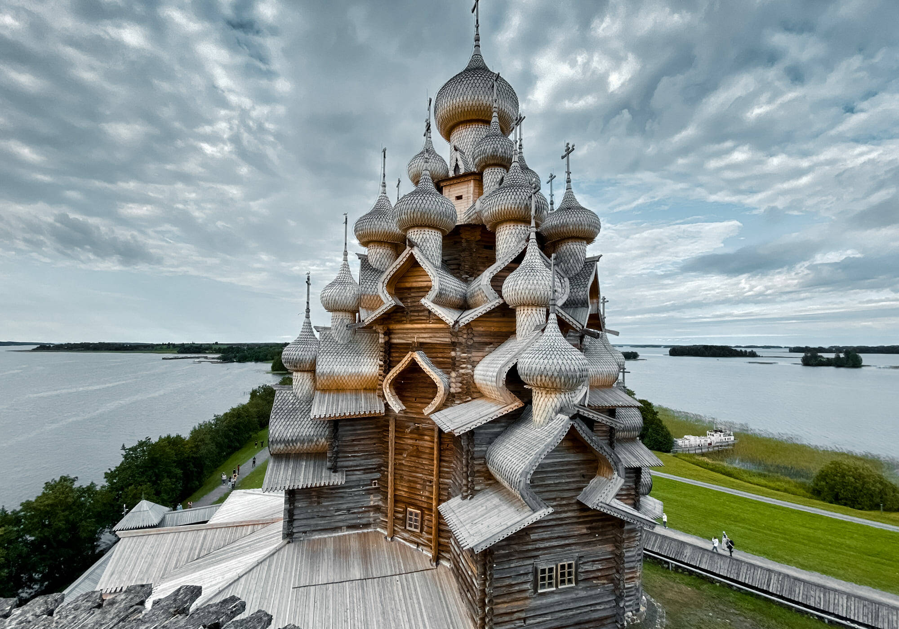
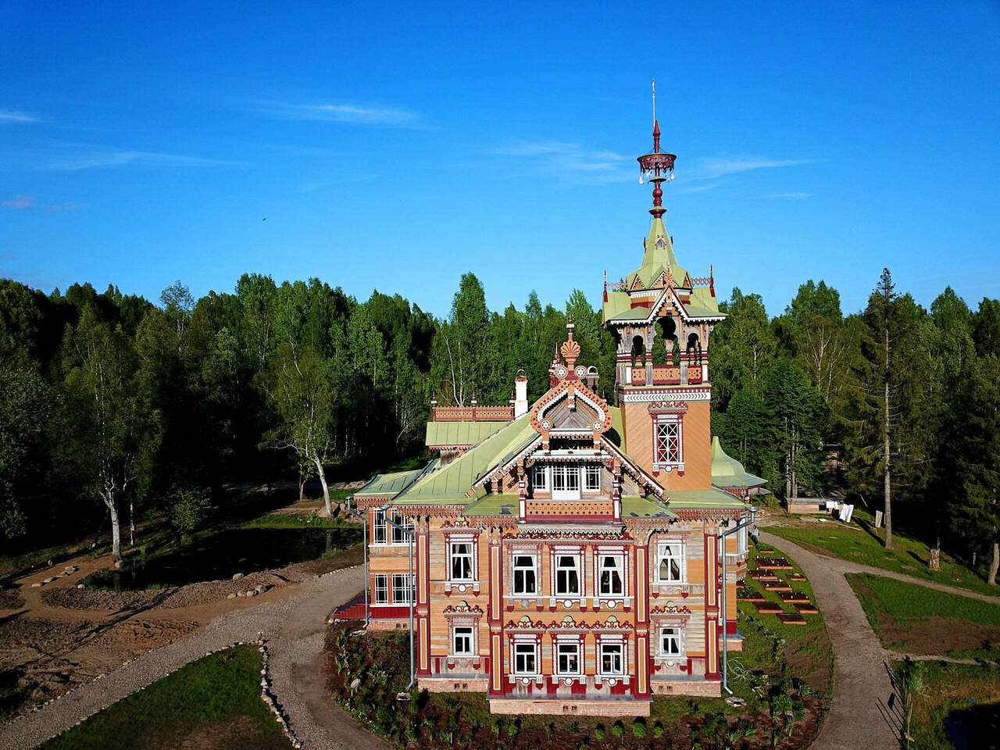
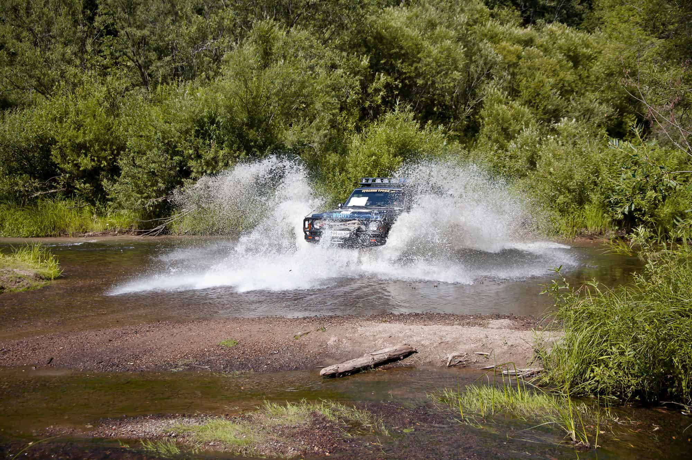

Туры по России

Что вас ожидает:
- Поездка на квадроциклах
- Знакомство с историей терема в Асташево
- 2 ночи в историческом бутик-отеле
- Участие в мастер-классах по изготовлению валенок
- Прогулка по старинному городу Солигалич
- Визит в Авраамиево-Городецкий монастырь
Программа
Путешествие начинается со встречи на ж/д вокзале города Галич, куда вам нужно добраться самостоятельно.
- День 1. Авраамиево-Городецкий монастырь и Солигалич.

- День 2. Терем Асташово и поездка на квадроциклах.

- День 3. Джип-тур к терему Погорелово.

Похожие туры
© 2005–2023 RussiaDiscovery.
115432, Москва, ул. 5-я Кожуховская, д. 10